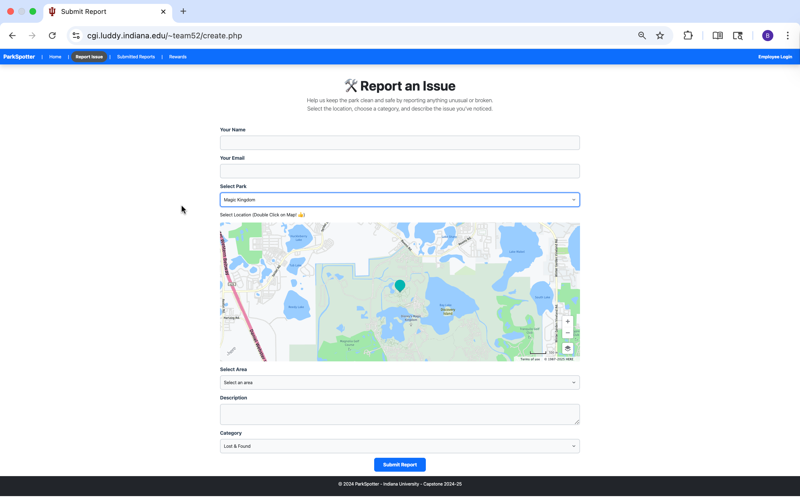
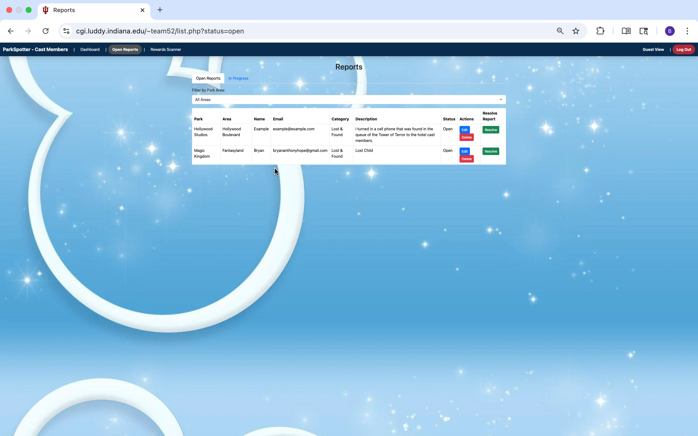
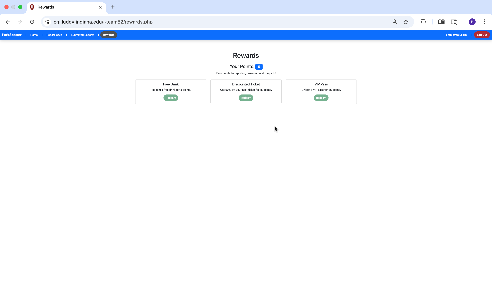

Guests notice trash, broken fixtures, and bottlenecks long before staff do — and they have no clean way to say so. ParkSpotter turns that moment into a map pin, a category, and a job in a staff queue.
Guest landing — one question, four next steps, no extra chrome.
Role
Research, UX, database
Team
4 students · Team 52
Timeline
Senior capstone, 2024–25
Stack
Figma, PHP, SQL, maps
The problem
Theme parks sell atmosphere. Litter, a stalled fountain, or a safety issue quietly taxes that atmosphere until guests decide not to come back. Our capstone research kept returning to a blunt number: about 70% of guests are less likely to return to a park that feels poorly maintained.
The operational problem is not that staff don’t care. It’s that guests already have the information — “this bathroom is out of soap,” “this trash can is overflowing” — and the park has no lightweight channel for it. Phone numbers get ignored. Guest services means leaving the ride line. So the issue sits there.
Who it had to serve
This was never a single-user app. Guests needed to report in under a minute, on a phone, while standing in a crowded path. Cast members needed a queue they could filter by park area, pick up, and resolve — not a comment box dumped into email.
That dual-user constraint shaped every later decision. If a guest flow was delightful but the staff view was a spreadsheet with no status, the product would fail in operations. If the staff tools were powerful but reporting took six fields, guests would not bother.
What I did
I ran user research and stakeholder conversations, tested the flows with people who matched our guest and staff scenarios, and built the SQL structure that kept guest reports and employee actions in the same loop. I was not the only designer on the team — I was the person holding the research notes next to the data model so the interface and the backend told the same story.

Reporting: location first, then category. The map is the input, not decoration.
Design decisions
01
Pin the place, don’t describe it.
Free-text locations (“near the castle, by the popcorn cart”) are useless to a crew. A double-tap on a live map, plus an area dropdown, gave staff coordinates they could act on.
02
Categories over essays.
Guests can add a description, but they must pick a type — cleanliness, maintenance, lost & found, safety. Routing starts at submit, not after a human reads a paragraph.
03
Give staff a working queue.
Open vs. in-progress, filter by park area, edit, and resolve. The employee view is a job board, not a guest-facing theme.
04
Reward the report.
A points loop (drink, ticket discount, VIP pass) made reporting feel like participation instead of complaining. We treated motivation as part of the service design, not a sticker at the end.

Staff queue — filter, pick up, close the loop.

Guest rewards — a reason to report the next issue too.
What I learned
A reporting product is a conversation between two roles. Designing only the guest side would have been easier — and incomplete. Sitting with the database also changed how I wireframe: if a status can’t exist in the model, it shouldn’t exist on the screen.
If I continued the work, I would tighten the guest landing (staff login does not belong beside guest tasks), replace the busy employee background so the table can breathe, and run task-timed tests on the map pin. Double-tap is learnable; it is not obvious.